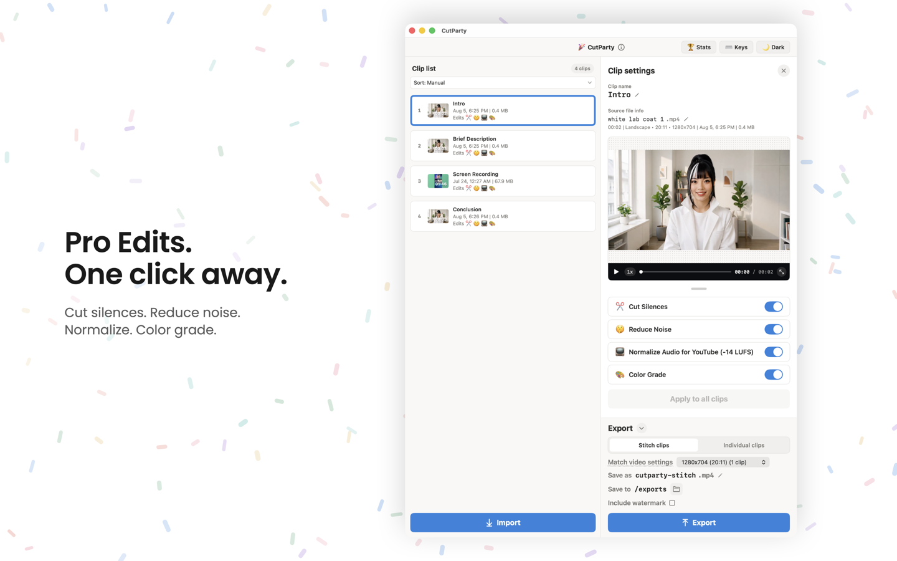
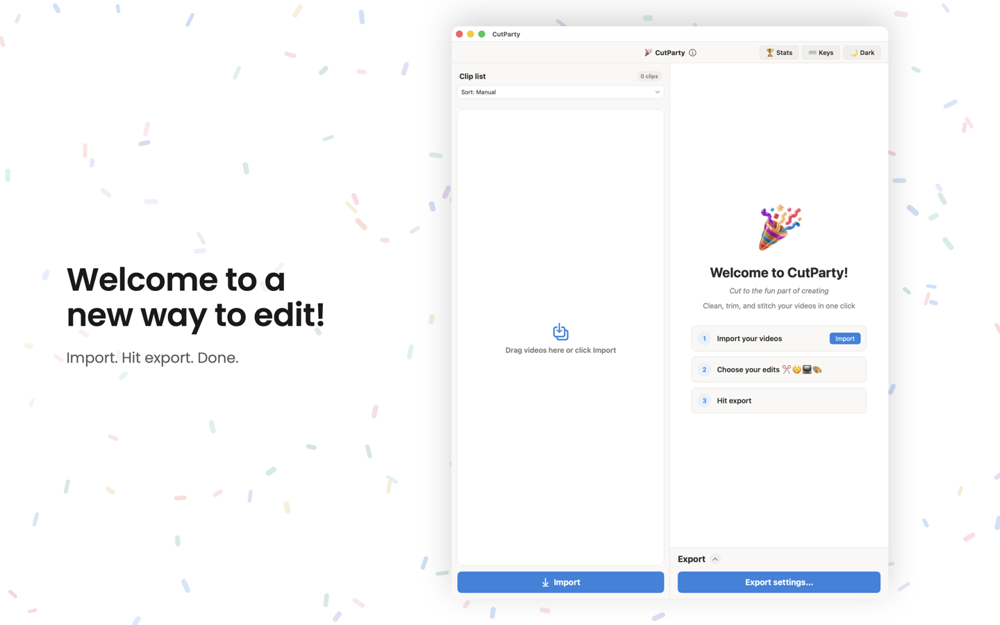
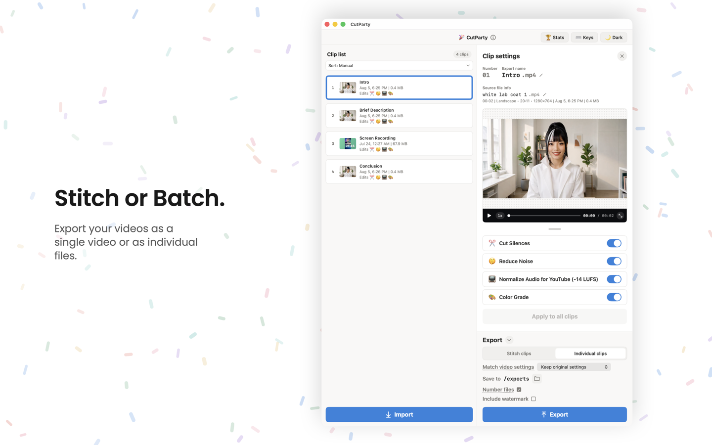
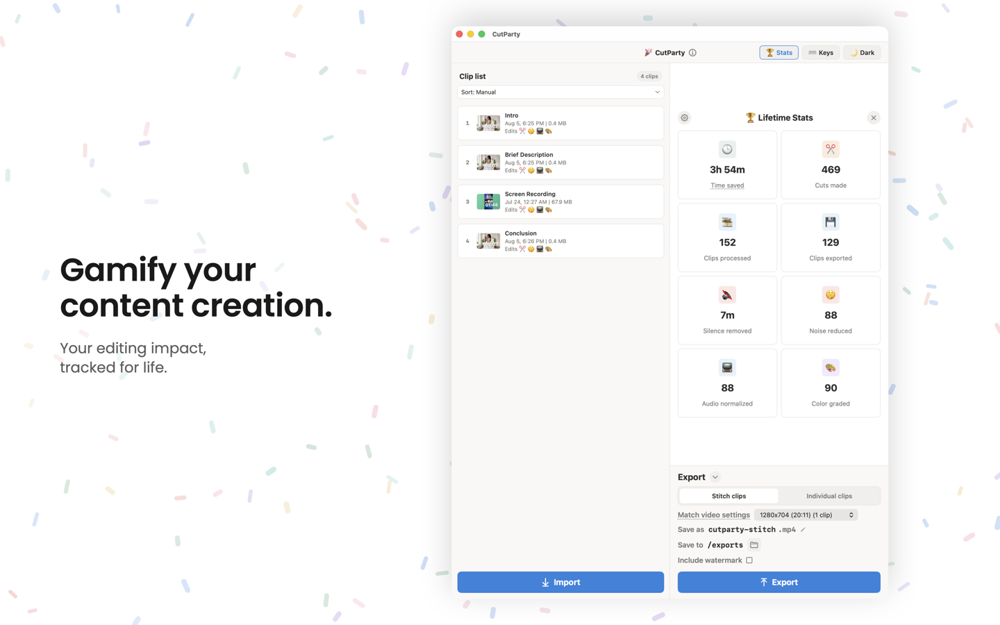

Drop in a folder of clips. CutParty cuts silences, reduces noise, normalizes loudness, color grades, and stitches them into a finished video — one click, entirely on your Mac.

No timeline, no scrubbing, no plugins to install. Everything happens in one window.
Drag in a folder of clips, or click Import. CutParty lines them up for you.
Toggle Cut Silences, Reduce Noise, Normalize Audio, and Color Grade — per clip.
Get one stitched video, or every clip as its own file, at the size you choose.
Toggle the edits you want, then export. The polish that used to take an afternoon, in a click.
Automatically trims dead air so your video always moves.
Cleans up background hiss and hum from your audio.
Evens out loudness to a consistent level (-14 LUFS for YouTube).
A tasteful grade that makes ordinary footage look finished.
Export one stitched video, or every clip as its own file.
See cuts made, silence removed, and time saved over your lifetime.



CutParty is not another monthly bill, and it never asks you to sign in. The full app and every core feature are yours to use. Exports can include an optional CutParty watermark — keep it on to support the app, or turn it off anytime.